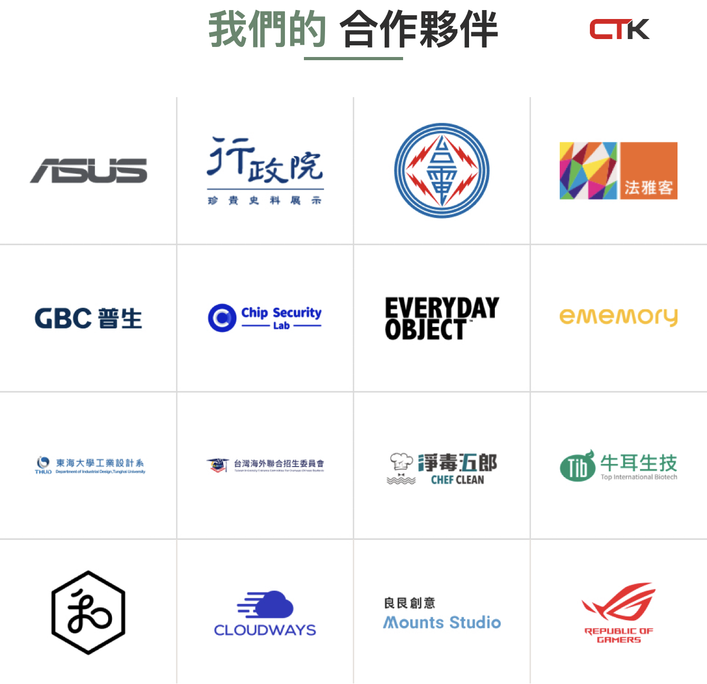

01 BUILD
清楚的網站基礎
- RWD 與品牌呈現
- 導覽、頁面與內容入口
- SEO／AEO 基礎架構
先理解需求，再一起收斂最適合的網站範圍。
讓第一次接觸的人，快速理解山太士的專業與定位。
讓資訊有一致的架構，也方便持續更新。
把上線、資安與交接，一開始就納入規劃。
哪些先用標準模組完成，哪些值得投入更完整的客製設計。
這次會議先交換這些判斷；我們會把它整理成後續可確認的範圍與方案。
不只是視覺完成；也讓內容與日後的營運接得住。
每個階段都有可確認的產出，也保留讓內容與內部審核跟上的空間。
資安與維護不是要增加複雜度，而是讓網站可以被更放心地交給團隊使用。
弱點掃描、WAF、備份、帳號權限與資安風險盤點，依專案實際需求規劃並留下交付紀錄。
今年完成 InPsy 與 GBC，也持續服務上市櫃企業與多品牌網站。
品牌呈現、內容管理與上線後的營運方式，必須一起被設計。不同企業的內容結構不同，但都需要能長期維護的交付方式。
InPsy · GBC · 企業網站經驗
下一頁以 GBC 的 ESG 與投資人資訊為例，直接看內容架構與維護邏輯。
這一頁作為現場 demo 的導覽；實際內容與完整度，會回到山太士的需求一起確認。
ESG 適合用固定主題與內容版型持續累積；投資人專區則需要先確認文件、分類、表格與下載流程。